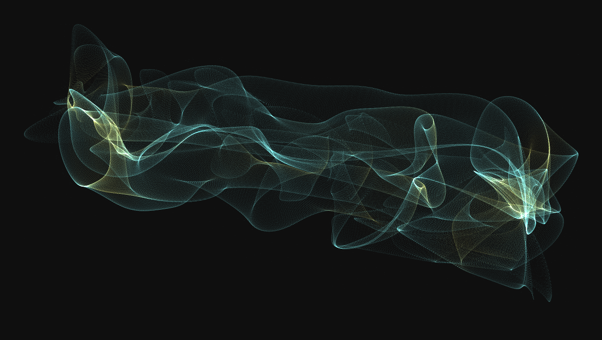
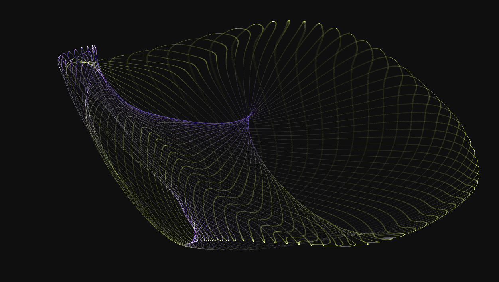
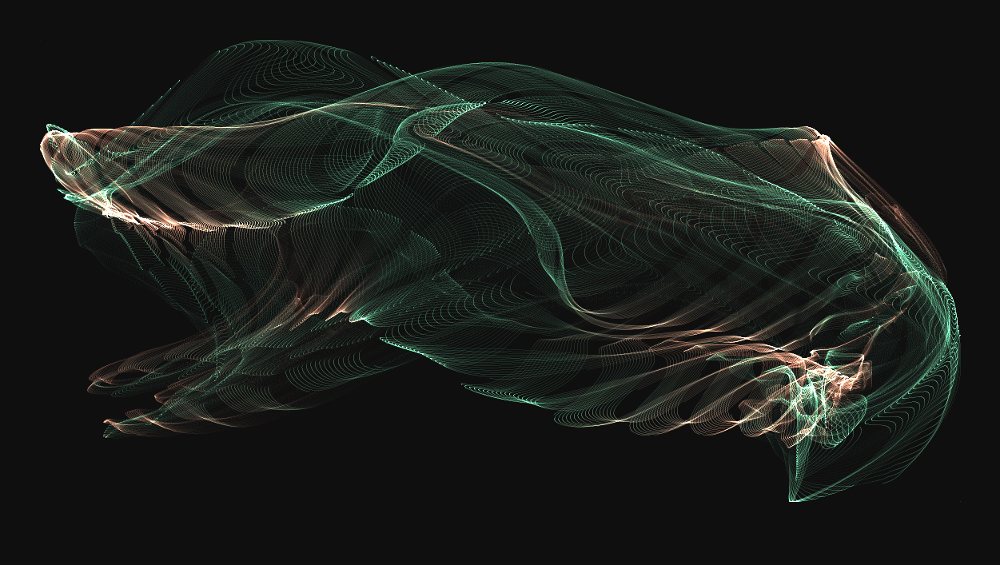
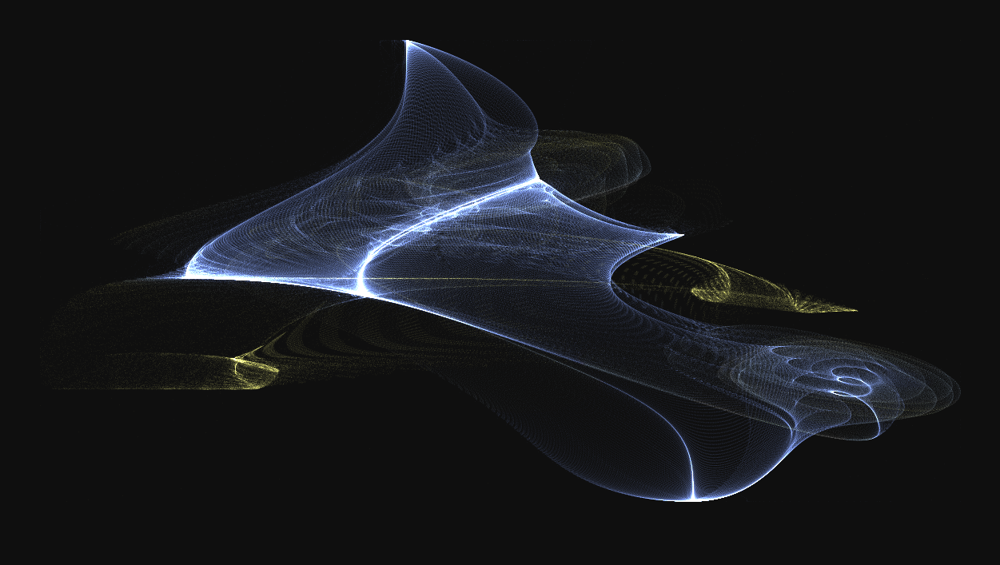
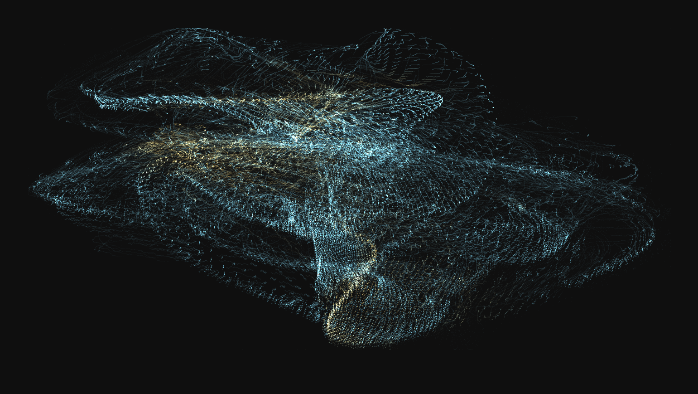
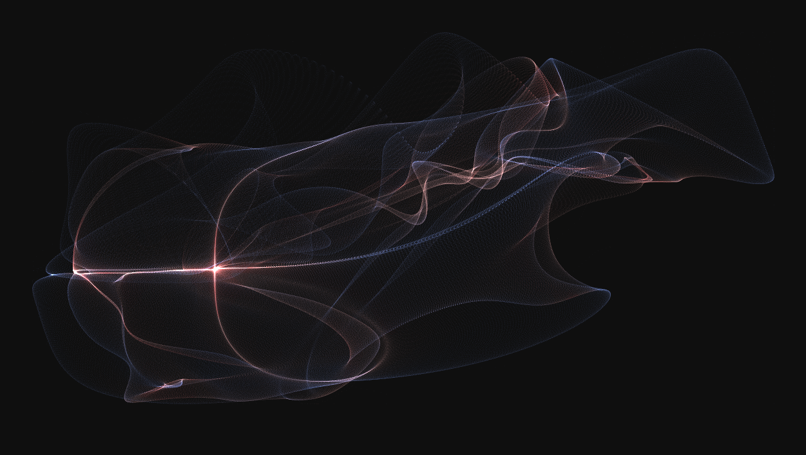

For some reason, I stumbled upon a Facebook Group called PerlinArtBot7403 a few days ago. This is a place where a Bot posts its random generated artworks everyday. Pattern generation is based on Perlin noise field algorithms (but not only). The community can then download the code and try to play around with parameters to produce their own results. Original code is in C++ and I thought it could be fun to make a web version of it.
The original project offers a large number of generation process (Perlin Noise Field, Attractors, Fractal... ). Here, I focused on Fujii Atractors (More details below). The code I wrote is largely inspired by the original one you can find here. For this project, I used P5.js which is a awesome Javascript Library for creative coding.
The maths behind this is quite simple : it consists in computing a bunch of random coefficients and plotting points according to some recurrence formulas using those coefficients. The first formulas I used were the Fujii ones that I took from the original project. After some research, I add two other attractors (Clifford and Dejong) which seem to be at the origin of the first one. You can select them in the settings panel.
Feel free to check those links for more informations on the equations:
You'll also find bellow some nice generations I got from this project. Thank's for reading.
Lilzer7
Seed: 342586596768
Seed: 882844055977
Seed: 594906691071
Seed: 942565634814
Seed: 270896545378
Seed: 578165634069
Seed: 385711734323